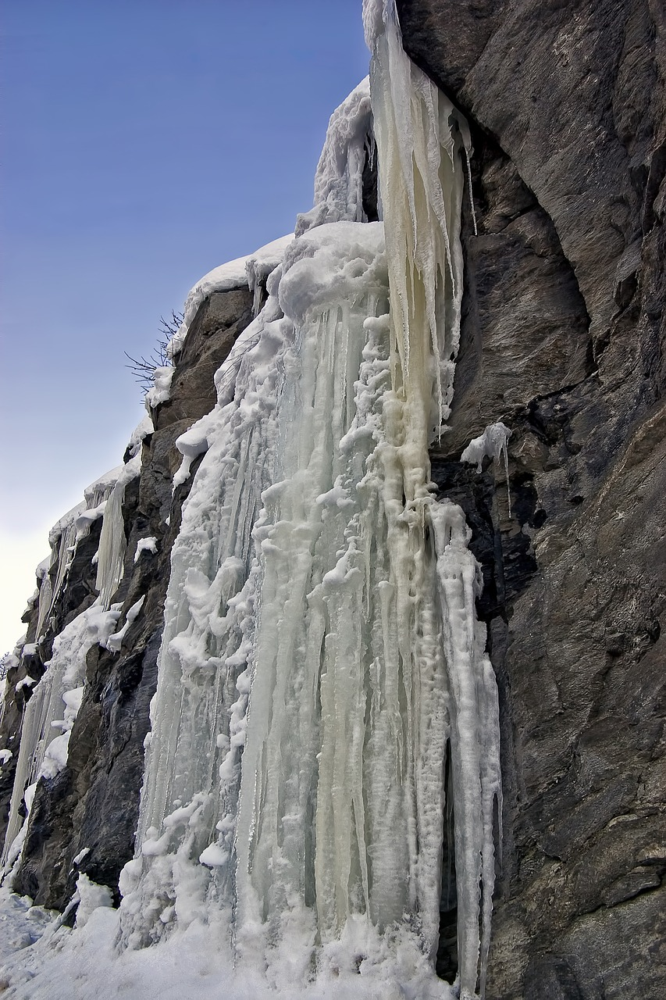
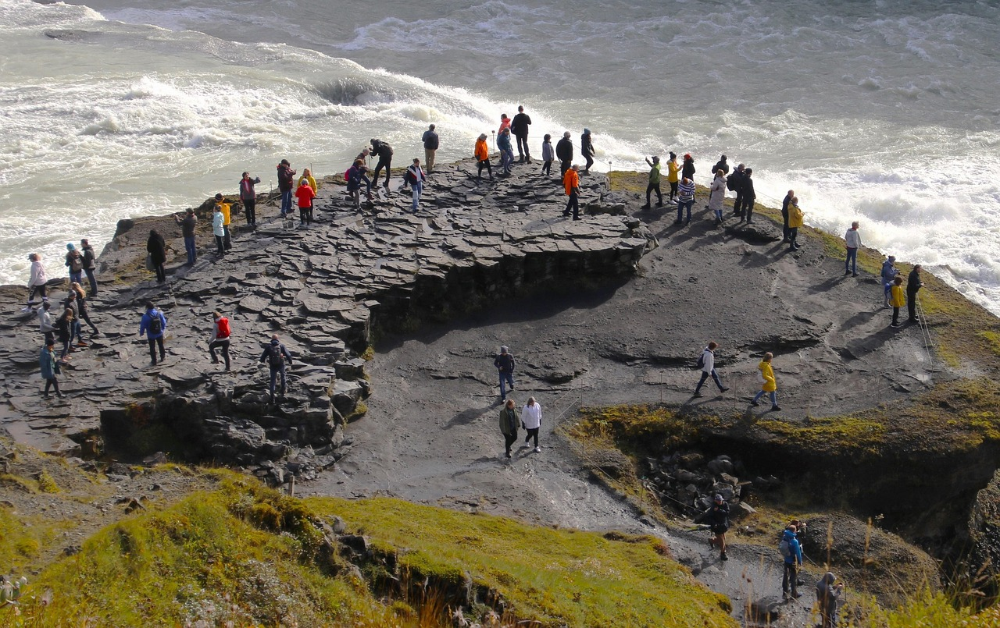
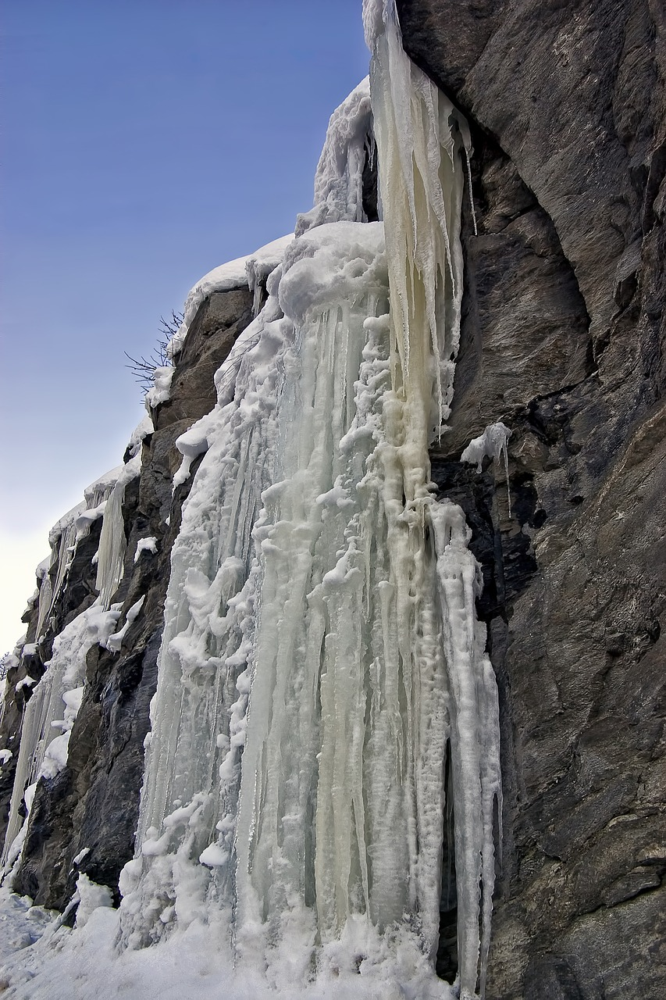
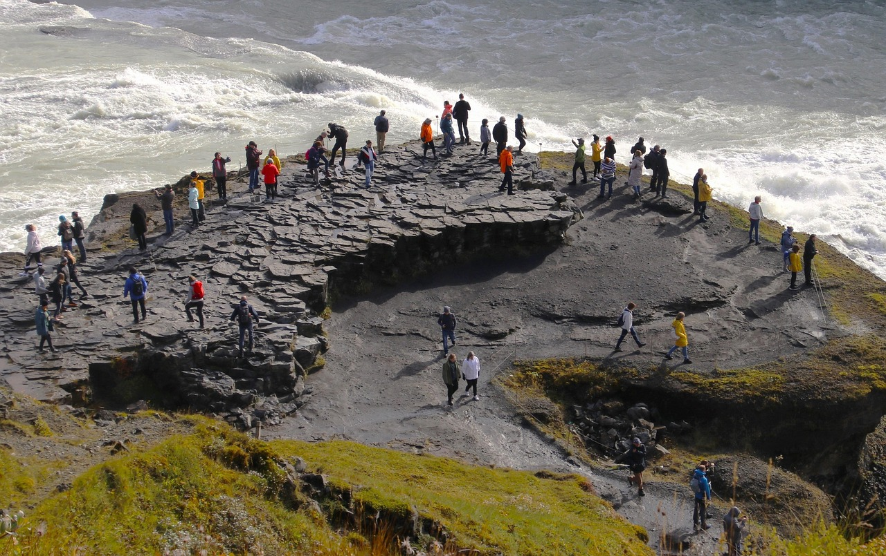

La joya del Círculo Dorado
La cascada Gullfoss, situada en el suroeste de Islandia, es uno de los lugares más visitados del país. Su nombre significa “cascada dorada” y se debe al brillo del agua cuando el sol se refleja en sus dos caídas principales.
El agua del río Hvítá cae desde una altura de 32 metros en dos saltos, creando una nube de vapor visible desde varios kilómetros. Es un espectáculo natural impresionante, especialmente en invierno, cuando el entorno se cubre de hielo.
Gullfoss forma parte del famoso Círculo Dorado, una ruta turística que también incluye el Parque Nacional Thingvellir y el área geotérmica de Geysir.
Galería de imágenes
 


